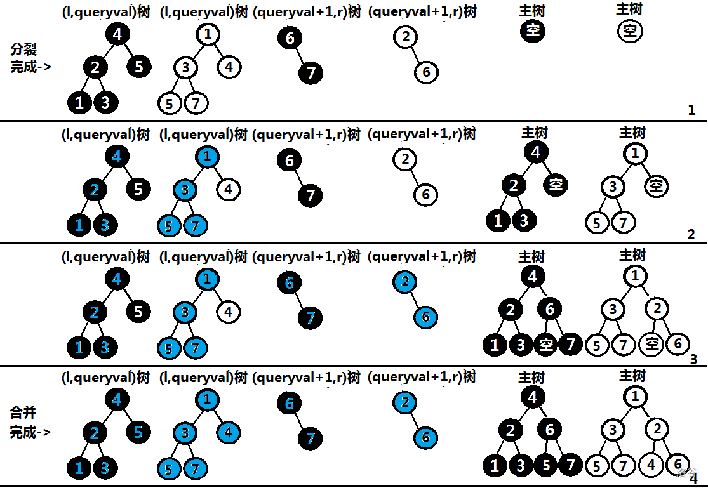

FHQTreap
无旋Treap（FHQ）完爆带旋Treap。
在了解什么是FHQTreap之前，我们需要了解什么是二叉搜索树（BST）。
BST
二叉搜索树其实很简单。就是一棵二叉树，对每个节点，其左子树小于当前节点，右儿子大于当前节点。
由于二叉树这个优美的性质，我们可以完成一些操作。
1.插入一个数。 2. 删除一个数。 3. 给你一个数，求其在该二叉树中的排名。 4. 根据排名求数值。 5. 求一个数的前驱。 6. 求一个数的后继。
其理想复杂度是 \(O(log_n)\),
然而，在形成二叉树的时候，如果退化成一条链，复杂度可能退化成 \(O(n)\)。
所以我们需要一种方法来维护二叉树。
这个时候就应该请出我们的 \(FHQ\)
FHQTreap
其实FHQ与旋转法本质上是一样的，都是根据一个树的 \(rand\)值来确定一棵树的形态。
为什么这种维护方法不需要旋转，这是因为Treap的本质——结构确定。
FHQ 中最重要的就是分裂和合并。
分裂
因为从一个根节点开始遍历就可以推出整棵树，所以一个Treap的根节点代表的是这棵Treap所有的点，你可以将其理解为这个Treap所代表的是一个 \(val\) 的区间，中序遍历后的 \(val\) 序列是单调不减的。-----by 万万没想到
根据图片理解一下。

当 \(askval\) 时，分裂的过程如图，图中的蓝色是已经归入左区间树的点，橙色是已经归入右区间树的点，左右区间树中的实圆是已经确定的节点，虚圆是尚未确定的节点。
我们首先建立两个虚拟节点，就是图中的虚圆，如果当前访问的节点 \(now\) 的 \(key\le askval\) ，那么$ now$ 及 \(now\) 的左子树，都应归在左区间树里，就是将左区间树上一个虚拟节点赋为 \(now\) ，此节点便由虚变实，然后对 \(now\) 建立虚拟的右儿子。否则，\(now\) 及 \(now\) 的右子树应该归在右区间树里，就是将上一个右区间树的虚拟节点赋为 \(now\) ，此节点便由虚变实，然后对 \(now\) 建立虚拟的左儿子。如果 \(now\) 是空节点，则将左右区间树的虚拟节点赋为 0 。
因为每访问到一个非空的 \(now\) 节点时，递归分裂子树进行的操作会改变左右儿子，所以在维护一些值如子树大小的时候需要用同线段树类似的方法进行上传操作。
code
inline void build(int x){
cnt++;
tr[cnt].siz=1;
tr[cnt].ls=tr[cnt].rs=0;
tr[cnt].key=x;
tr[cnt].pri=rand();
}
inline void push_up(int k){
tr[k].siz=tr[tr[k].ls].siz+tr[tr[k].rs].siz+1;
}
inline void split(int u,int x,int &l,int &r){
if(u==0){l=r=0;return;}
if(tr[u].key<=x){
l=u;
split(tr[u].rs,x,tr[u].rs,r);
}
else{
r=u;
split(tr[u].ls,x,l,tr[u].ls);
}
push_up(u);
}
分裂后\(l，r\)是两颗新子树的根。
合并
因为已经提过，一棵Treap的形态已经被rand值给固定住了。

黑底白字是 \(key\) 权值，而白底黑字是 \(rand\) 值。当一个节点被染蓝，说明此节点已被放入最终获得了主树内。
\(l,r\) 分别为左右区间树的根节点，那么 \(l\) 及其子树要么在 \(v\) 的左子树中，要么 \(r\) 及其子树在 \(l\) 的右子树中。
（注意：是子树而非子节点。）
而一棵二叉树中越是上面的节点，rand值越小。
所以，同时遍历两棵树，不断确定谁为根。
code
inline int merge(int l,int r){
if(l==0||r==0)return l+r;
if(tr[l].pri>tr[r].pri){
tr[l].rs=merge(tr[l].rs,r);
push_up(l);
return l;
}
else{
tr[r].ls=merge(l,tr[r].ls);
push_up(r);
return r;
}
}
插入
插入一个数，把比该数小的数，大的数分裂成两棵树，再自己建一棵树，合并三棵树。
code
inline void build(int x){
cnt++;
tr[cnt].siz=1;
tr[cnt].ls=tr[cnt].rs=0;
tr[cnt].key=x;
tr[cnt].pri=rand();
}
inline void insert(int x){
int l,r;
split(root,x,l,r);
build(x);
root=merge(merge(l,cnt),r);
}
删除
把比该数小的数，大的数分裂成两棵树。合并这两棵树。
code
inline void del(int x){
int l,r,p;
split(root,x,l,r);
split(l,x-1,l,p);
p=merge(tr[p].ls,tr[p].rs);
root=merge(merge(l,p),r);
}
get_key_by_rank
就像普通二叉树一样去求就行
code
inline int kth(int u,int k){
if(k==tr[tr[u].ls].siz+1)return u;
if(k<tr[tr[u].ls].siz)return kth(tr[u].ls,k);
else return kth(tr[u].rs,k-tr[tr[u].ls].siz-1);
}
get_rank_by_key
求该数左子树的大小就行了。
code
inline int getrank(int x){
int l,r;
split(root,x-1,l,r);
int t=tr[l].siz+1;
root=merge(l,r);
return t;
}
前驱/后继
code
inline int getpre(int x){
int l,r;
split(root,x-1,l,r);
int last=tr[kth(l,tr[l].siz)].key;
root=merge(l,r);
return last;
}
inline int getnxt(int x){
int l,r;
split(root,x,l,r);
int last=tr[kth(r,1)].key;
root=merge(l,r);
return last;
}
code
struct FHQTreap{
int cnt=0,root=0;
struct node{
int ls,rs;
int key,pri;
int siz;
}tr[N];
int ans;
inline void build(int x){
cnt++;
tr[cnt].siz=1;
tr[cnt].ls=tr[cnt].rs=0;
tr[cnt].key=x;
tr[cnt].pri=rand();
}
inline void push_up(int k){
tr[k].siz=tr[tr[k].ls].siz+tr[tr[k].rs].siz+1;
}
inline void split(int u,int x,int &l,int &r){
if(u==0){l=r=0;return;}
if(tr[u].key<=x){
l=u;
split(tr[u].rs,x,tr[u].rs,r);
}
else{
r=u;
split(tr[u].ls,x,l,tr[u].ls);
}
push_up(u);
}
inline int merge(int l,int r){
if(l==0||r==0)return l+r;
if(tr[l].pri>tr[r].pri){
tr[l].rs=merge(tr[l].rs,r);
push_up(l);
return l;
}
else{
tr[r].ls=merge(l,tr[r].ls);
push_up(r);
return r;
}
}
inline void insert(int x){
int l,r;
split(root,x,l,r);
build(x);
root=merge(merge(l,cnt),r);
}
inline void del(int x){
int l,r,p;
split(root,x,l,r);
split(l,x-1,l,p);
p=merge(tr[p].ls,tr[p].rs);
root=merge(merge(l,p),r);
}
inline void getrank(int x){
int l,r;
split(root,x-1,l,r);
int last=tr[l].siz+1;
root=merge(l,r);
}
inline int kth(int u,int k){
if(k==tr[tr[u].ls].siz+1)return u;
if(k<=tr[tr[u].ls].siz)return kth(tr[u].ls,k);
else return kth(tr[u].rs,k-tr[tr[u].ls].siz-1);
}
inline int getpre(int x){
int l,r;
split(root,x-1,l,r);
int last=tr[kth(l,tr[l].siz)].key;
root=merge(l,r);
return last;
}
inline int getpre1(int x){
int l,r;
split(root,x,l,r);
int last=tr[kth(l,tr[l].siz)].key;
root=merge(l,r);
return last;
}
inline int getnxt(int x){
int l,r;
split(root,x,l,r);
int last=tr[kth(r,1)].key;
root=merge(l,r);
return last;
}
inline int size(){
return tr[root].siz;
}
inline int getans(int x){
int a=getpre1(x),b=getnxt(x);
if(x-a>b-x)return b;
else return a;
}
}
文艺平衡树
#include<bits/stdc++.h>
using namespace std;
//#define int long long
#define i64 long long
#define ull unsigned long long
#define ldb long double
#define db double
#define i128 __int128
#define up(a,b,c) for(int a=(b);a<=(c);a++)
#define dn(a,b,c) for(int a=(b);a>=(c);a--)
#define pii pair<int,int>
#define pdi pair<double,int>
#define pivi pair<int,vector<int> >
#define lc k<<1
#define rc k<<1|1
#define fi first
#define se second
#define endl '\n'
#define i16 short
#define eps 1e-8
const int N=5e5+100,M=2e6+100;
const int mod1=39989,mod2=1e9;
const int inf=1e9+7;
const ull uinf=1e18+14;
mt19937 rng(time(0));
namespace IO{
inline int read(){
char c=getchar();int x=0,fh=0;
while(c<'0'||c>'9'){fh|=c=='-';c=getchar();}
while(c>='0'&&c<='9'){x=(x<<1)+(x<<3)+(c^48);c=getchar();}
return fh?-x:x;
}
inline void wt(int x){
if(x<0){x=-x;putchar('-');}
if(x>9)wt(x/10);
putchar((x%10)^48);
}
inline void write(int x,bool op){
wt(x);
putchar(op?'\n':' ');
}
}using namespace IO;
int n,m;
int a[N];
struct FHQTreap{
struct node{
int ls,rs;
int val,key;
int siz,tag;
}tr[N];
int rt=0,cnt=0;
inline void push_up(int k){
tr[k].siz=tr[tr[k].ls].siz+tr[tr[k].rs].siz+1;
}
inline int nd(int x){
cnt++;
tr[cnt].val=x;
tr[cnt].key=rng();
tr[cnt].siz=1;
return cnt;
}
inline void push_down(int k){
if(tr[k].tag){
tr[tr[k].ls].tag^=1;
tr[tr[k].rs].tag^=1;
swap(tr[k].ls,tr[k].rs);
tr[k].tag=0;
}
}
inline void split(int u,int x,int &L,int &R){
if(!u)return L=R=0,void();
push_down(u);
if(tr[tr[u].ls].siz>=x)R=u,split(tr[u].ls,x,L,tr[u].ls);
else L=u,split(tr[u].rs,x-tr[tr[u].ls].siz-1,tr[u].rs,R);
push_up(u);
}
inline int merge(int L,int R){
if(!L||!R)return L|R;
push_down(L);
push_down(R);
if(tr[L].key>tr[R].key){
tr[L].rs=merge(tr[L].rs,R);
push_up(L);
return L;
}
else{
tr[R].ls=merge(L,tr[R].ls);
push_up(R);
return R;
}
}
inline void insert(int x){
rt=merge(rt,nd(x));
}
inline void rev(int l,int r){
int x,y,z;
split(rt,r,x,z);
split(x,l-1,x,y);
tr[y].tag^=1;
rt=merge(x,merge(y,z));
}
inline void print(int x){
if(!x)return;
push_down(x),
print(tr[x].ls);
cout<<tr[x].val<<" ";
print(tr[x].rs);
}
}T;
signed main(){
n=read();m=read();
up(i,1,n)T.insert(i);
int l,r;
up(i,1,m){
l=read();r=read();
T.rev(l,r);
}
T.print(T.rt);
return 0;
}
____图和部分分裂合并描述by万万没想到